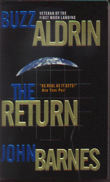

The Returnby Buzz Aldrin and John Barnes
publisher: Tor Fiction
Fiction, 340 pages | 
(book cover art, Copyright ©2000 Buzz Aldrin & John Barnes)
Used with Permission. |
Return to the Book MenuPrevious|Next
Description:
America's favorite athelete is also a space buff - he is one of the first civilians headed to space. But when disaster strikes his flight, the man who put him on the shuttle is cast as the scapegoat. And with his life and career in ruins, so may be his hopes for advancing America's space program. But when another catastrophe occurs, he may be just the man to save the day.
Recommended for: NASA enthusiasts, NASA critics, people interested in how the media affects people's lives, rescuers, forward-thinkers
Did-you-read questions:
Deadline: February 1, 2005.
These should be easy questions, but you should have the questions ready and keep an eye out during your reading. Each question should be answered with 1-2 sentences.
Note: these questions are not probably not the most important part of the book! Your essay will not have to cover these questions!
- Which real-life athelete is Michael James almost certainly based upon?
- Who are the Mars Four?
- What is the main dish on Friday nights?
- What is the conventional name of the weapon launched by the Pakistanis?
- What is the radio code name of the ship that goes to visit the ISS?
Report Questions:Deadline: Peer Review Session on February 8, 2005; paper due February 10, 2005.
You should write a 3 - 4 page essay on one of the following questions. Your essay should include examples and references to the book, unless otherwise specified. Page number references are sufficient for citing material from the primary book. If you use outside materials, cite your sources in full. If you would rather write on a different topic, you may, but clear it with Mr. Howe or Ms. Sullivan first.
- What do you think about civilians in space? Do the people in this book respond appropriately to a tragedy with a civilian? How does this compare to what happened in 1986?
- As you read this book, you may detect some manipulation to get Mom and Dad back together again. This manipulation is done by both child and adults. Is this fair to them? Is this fair to the child? Use examples from the book and possibly from real life to support your reasoning.
- What do you think public response would be after the rescue mission for Scott and his team? Would the earlier problems be a factor?
- What does this book suggest about the future of space exploration? Can you extrapolate what will happen to the space program after the novel's ending?
Graphic and Presentation:
Deadline: February 21 - March 3, 2005.You will give a 10 minute presentation on both of the following:
- Convince your peers that they should (or should not) read this book. (This may include a brief summary of the book.) Give examples of what was cool or worthwhile in the book, and what you got out of it (or didn't).
- Describe a (realistic) science idea that you learned about in this book, citing information from at least 2 external sources (other than the dictionary). If you would like help choosing or understanding an idea from your book, you are invited to come talk to Mr. Howe or Ms. Sullivan.
Note: This presentation should not be just a reading of your paper!Along with this presentation, you should have a graphic that will go with it. A Power Point presentation is recommended, but if you have a special idea for a something else, such as a model, an original video presentation, or a well done drawing/ painting/ sculpture/ etc., you may do so, provided it involves a similar level of effort and polish. Speak to Mr. Howe or Ms. Sullivan first if you are considering an alternate graphic format to the Power Point.
Return to the Book MenuPrevious|Next